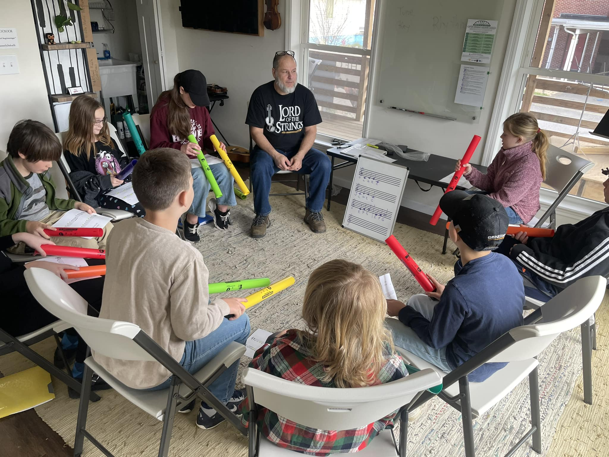
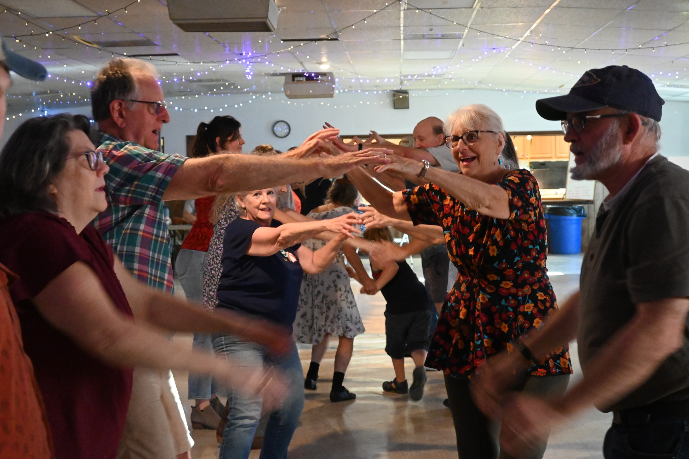

Scholarships
Cacapon Music and Dance Foundation, in partnership with The Cat and The Fiddle, enables the Karper Creatives Scholarship program, providing 30 weeks of private music instruction, group ensemble classes and instrument access for students in grades 3rd-10th.
Learn More →
Community Square Dances
Our square dances welcome dancers of all skill levels and ages. No experience or partner needed - just come ready to dance and have fun!
Learn More →
Special Events
Join us for workshops, field trips, and special community events that bring together musicians, dancers, and families throughout the year.
Learn More →